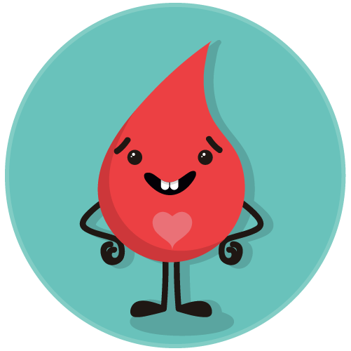

Día del Donador de Sangre
14 de Junio

El 14 de junio de cada año se celebra el Día Mundial del Donante de Sangre. Su objetivo es el de concienciar a todo el mundo sobre la necesidad de disponer de sangre y productos sanguíneos seguros para transfusiones, y sobre la crucial contribución que efectúan los donantes de sangre voluntarios y no remunerados a los sistemas nacionales de salud. Además, este día ofrece una oportunidad para instar a los gobiernos y las autoridades sanitarias nacionales a que proporcionen los recursos suficientes y establezcan sistemas e infraestructuras que permitan aumentar la obtención de sangre de donantes voluntarios y no remunerados.
La sangre y los productos sanguíneos seguros, así como su transfusión, son un aspecto fundamental de la atención y la salud pública. Cada día permiten salvar millones de vidas y mejorar la salud y la calidad de vida de muchos pacientes. La necesidad de sangre es universal, pero el acceso de todos los que la necesitan no lo es. La escasez de sangre es particularmente aguda en los países en desarrollo.
Para garantizar que toda persona que necesite sangre segura pueda acceder a ella es preciso que en todos los países haya donantes voluntarios y no remunerados que donen sangre periódicamente. Durante la pandemia de COVID-19, a pesar de las restricciones de movilidad y de otras dificultades, los donantes de sangre de muchos países continuaron donando sangre y plasma para pacientes que requerían transfusiones. Este esfuerzo extraordinario, realizado en el contexto de una crisis sin precedentes, pone de relieve el papel crucial de los donantes de sangre bien organizados, voluntariamente comprometidos y no remunerados, para velar por la disponibilidad de suministros de sangre segura y suficiente, tanto en tiempos de normalidad como de emergencias.
¿Por qué se conmemora el 14 de junio?
La fecha conmemora el nacimiento de Karl Landsteiner, patólogo y biólogo austríaco, quién descubrió y tipificó los grupos sanguíneos y más tarde el factor Rh. El día tiene el objetivo de promover el acceso universal a sangre segura mediante la donación de sangre voluntaria y sin mediar remuneración alguna.
“La sangre está compuesta por glóbulos rojos, plaquetas y plasma. Los glóbulos rojos transportan el oxígeno, las plaquetas intervienen en la coagulación de la sangre y el plasma es la parte líquida de la sangre y contiene por factores de la coagulación y proteínas”, indica a Con Bienestar Alejandra Vellicce (M.N. 96.668) Jefa Departamento de Hemoterapia Hospital de Clínicas.